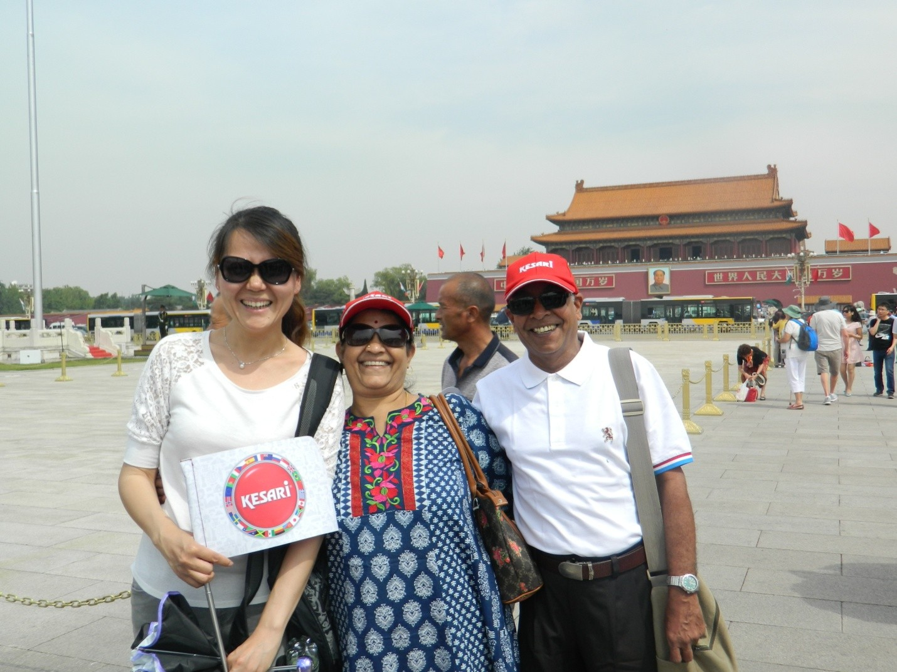
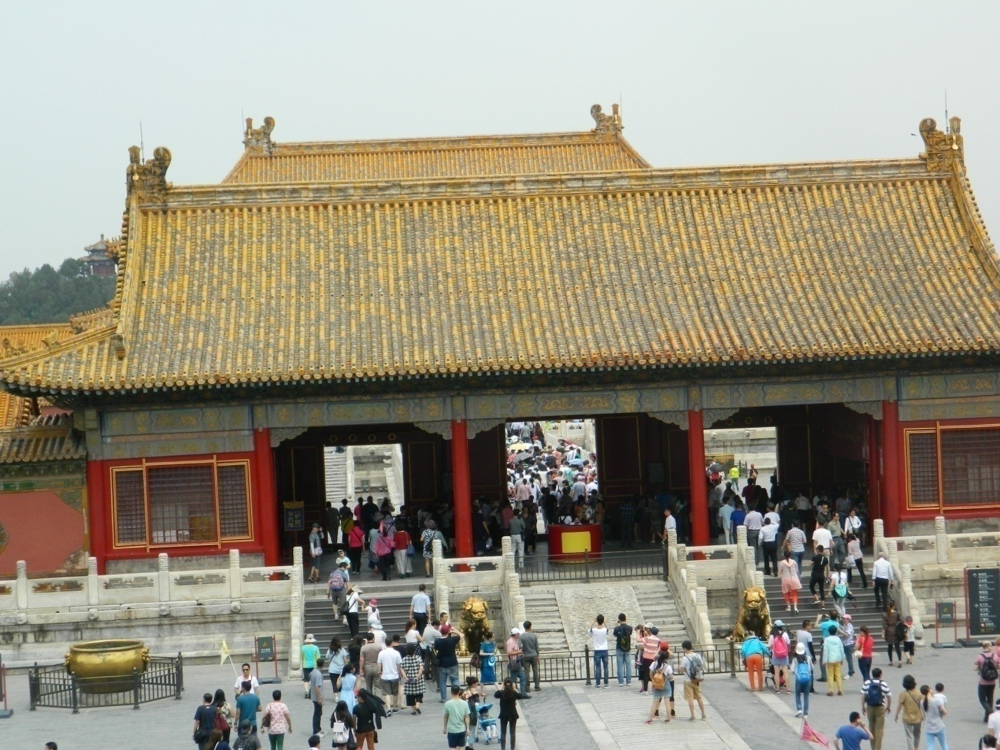
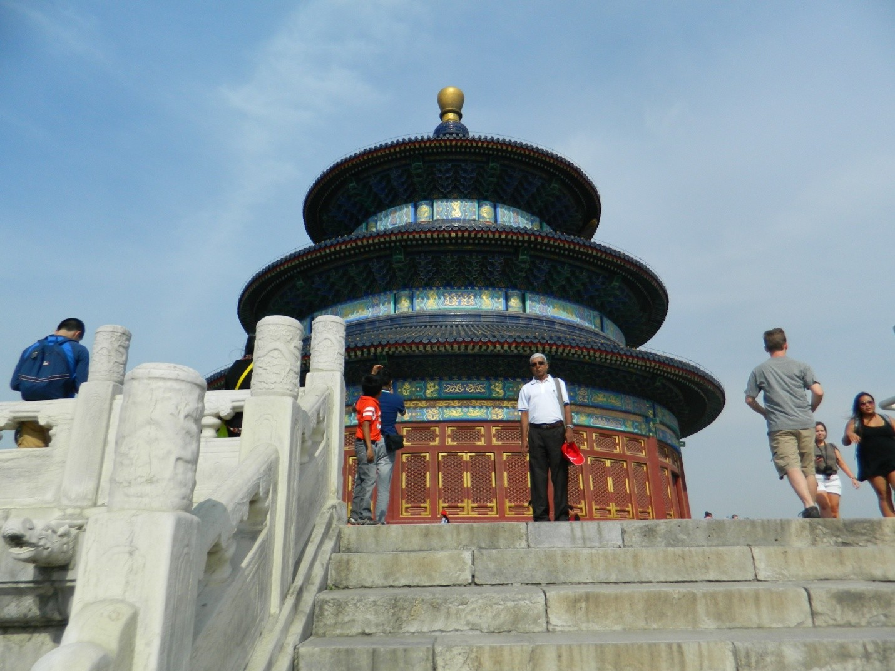
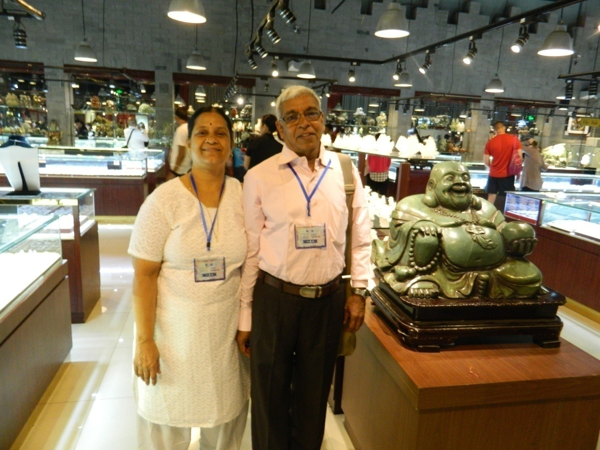
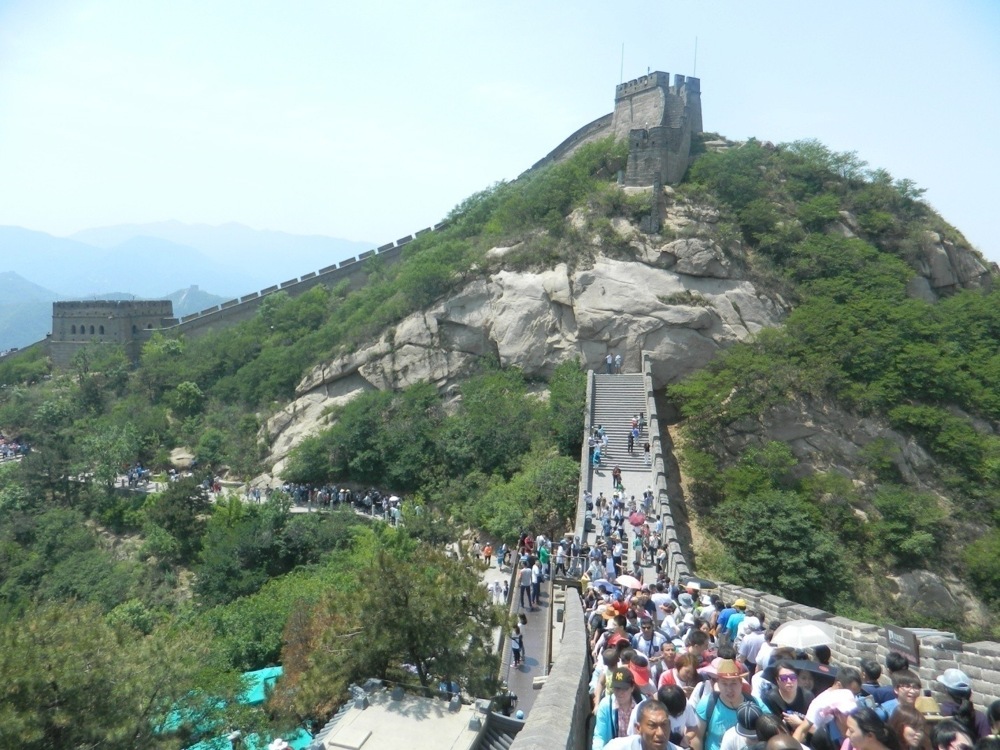
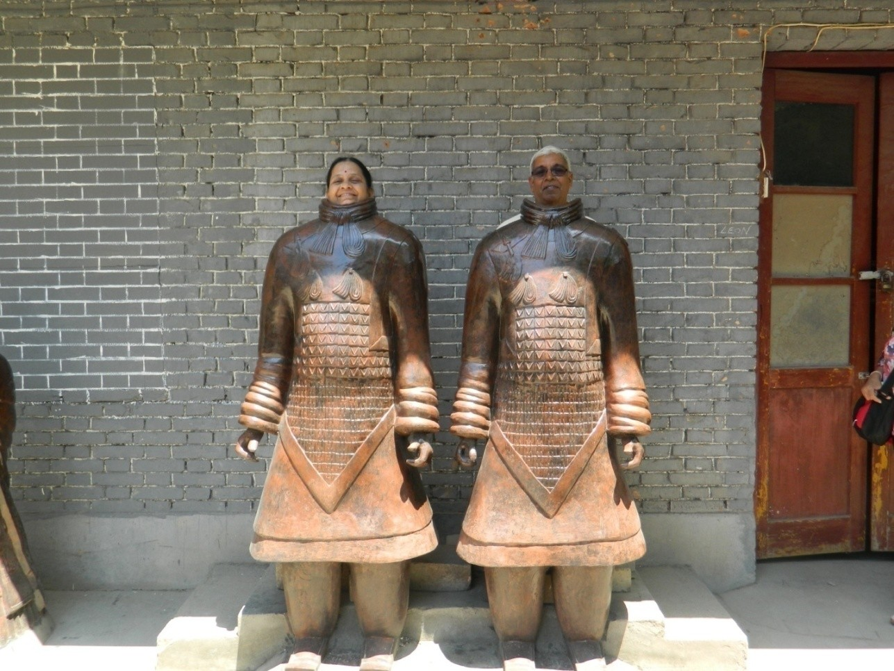
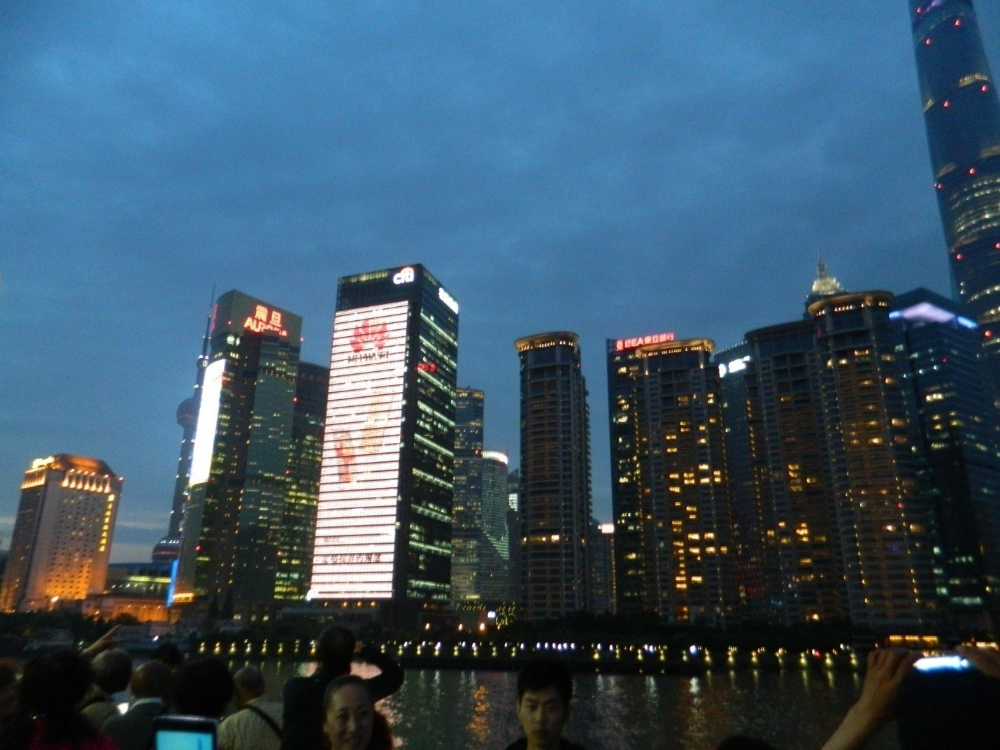

CHINA TOUR
We visited China through Kesari. It was a nine days trip. To obtain visa, personal appearance at the consulate is not required. e – visa facility is available. We submitted passport and Xerox copies of other relevant documents to Kesari and they arranged Visa. The pickup point was Chatrapati Shivaji International Airport, Mumbai – Terminal T 2, Gate no 5. This point is kesari’s usual meeting point for international tours. We booked reservation in Shevaneri Borivali bus and left Pune on 25th evening around 17 00 hrs. We got down at the nearest stop to International Airport at Andheri. From there we took an Auto and reached the airport around 21 hrs. We could meet Mr Vishal, the tour manager of Kesari there and collected our passport, air tickets and lots of eatables. Our air tickets were booked in Cathay Airlines to Beijing via Hongkong. We completed the formalities like booking check in luggage, obtaining boarding pass, immigration, security check etc and boarded the flight.

Sherey
At Beijing airport local guide of Kesari was waiting for us. Her name is Sherey. Her real name is different and she preferred to call her by this name. Her accent was quite good and every word she utters we understood. We boarded the AC bus and proceeded to Indian restaurant ‘Ganges’. They served a typical delicious Indian food. After completing the dinner we proceeded to our hotel. Hotel name is Qianmen Hotel. It was quite good and room was spacious. Free wi fi facility was there at the room and we could keep constant touch with our family members through our mobiles.
We visited four important cities of China : Beijing, Xian, Guilin and Shanghai. They were very clean like Singapore. We did not see any garbage heaps or waste plastics. Roads are very broad. We could see many flyovers to avoid signals. Traffic is very orderly. Bumper to bumper driving is not there. Over takings and haphazard drivings were not seen. Also they seldom use horns. Lane discipline is strictly adhered. Chinese are fair, tall and slim. Their nose is flat! (on the contrary they ridicule Indians by calling them as ‘big nose people’) They are friendly. Language is a big problem in China. English is not common. Because of this the local guides are frequently warning us to be with them like sticky rice. Here the fear about losing purse, valuables or passport is not there. Beggars are not seen. We do saw some poor people collecting empty plastic bottles from us in common places or at parking places. Chinese Government does not allow any individual to have any land property. All lands belong to the Government. Lands are given on lease for 70 years to individual or private sectors by the Government.

Forbidden City
On 26th after we reached Beijing we went to Ganges restaurant and had delicious dinner of Indian style and then reached Qianmen Hotel. We were so tired and had a sound sleep. Next day around 6 am we were ready to move out for visiting places. We went to hotel dining hall for breakfast. Chinese seems to take heavy breakfast. We saw lots of dishes mostly non vegetarian. Of course we could find bread, butter, jam, juices, corn flakes, oats, variety of fruits etc. After finishing the breakfast we left the hotel around 8 am. The first place we visited was Tiananmen Square.
Forbidden City & Temple of Heaven

Temple of Heaven
Tiananmen Square is the entrance place for the Forbidden City. The Palaces of this place were built during 15th century by Ming emperors. Now UNESCO declared these palaces as one of the world heritages. After the visit of Forbidden city we went to a Mall where varieties of Tea were sold. Also a live demonstration was there over the preparation of Tea. Though China is producing large quantity of tea for the world, we could never get tea to drink in any restaurant or stall or even in Indian hotels. We then visited the Temple of Heaven. This also declared by UNESCO as one of world heritages. Surprisingly we saw in the garden of the temple large amount of people were only gambling and smoking.
28/05/2016
Jade Factory
After we took our breakfast we left the hotel around 8 am. First we visited Jade Factory. Ladies of China are not using gold much for their jewelry. They use Jade more for this purpose. Chinese believes that such show pieces made out Jade brings luck. Also numerology is very much believed. Number four, fourteen, forty etc are considered most inauspicious.
Great Wall of China

Great Wall of China
About this I read in my school days. I never thought that one day I would be walking over this wall. The great wall of China is about 6000 km long and belongs to 15th century. This wall was earlier in several parts and during Ming dynasty they joined together and a made a long one. We went to the base of this wall by our bus and by rope car we reached the wall and walked for a while and returned back to the base through the cable car. We then visited the Imperial Garden and palace and the Olympic Village.

Terracotta warriors museum
From the airport we went to Terracotta warriors workshop. Then we visited the Terracotta warriors museum. The first emperor of China Qin Shi Huang believed that after his demise, he would be ruling the other world. As per his order, sculptures depicted armies and buried them along with the King’s body. In that army there were 8000 soldiers, 500 horses and 130 chariots were there. After the museum, we went to Pagoda temple where beautiful statues of Buddha's are kept.
We reached Guilin by 1 pm. Guilin is a beauiful city with full of greenery. We visited Reed Flute caves. Colour lights are making the rock to glitter. After that we had Foot massage by Chinese people in a parlor. 01/06/2016
Cruise on River Li & Bamboo Products
Next day morning we left hotel after breakfast for a cruise trip. The cruise was about 3 hours. From there we went to Bamboo emporium. From bamboo, fabrics are made and charcoal products are produced.

Shanghai
Around 10 am we reached Shanghai. Shanghai is a beautiful city. It looks like Singapore. First we visited the Jin Mao Tower. It is having 88 floors. Due to cloudy weather we missed the spectacular view of Shanghai from the top floor. We boarded the Maglev Train reaching maximum speed of 430 km per hour. We also visited the Bund water front, a pearl factory, and took a Cruise on Huangpu river at night. All buildings were glittering with colorful lights. Finally, we went to the Fake market of Shanghai. Here bargaining is intense. After the Fake market, we had our dinner and returned back to our hotel.
We left the hotel around 11 am and reached Shanghai Airport. Take off was very funny—lots of planes were waiting one after the other for take off! Subsequently, we took another flight from Hong Kong and reached Mumbai mid night of 4th June. We took a cab from the airport and reached home early morning safely with all luggage and passports. Overall the trip was enjoyable.